Festivals
Tshechu festivals with mask dances and religious celebrations in dzongs.
Traditions, Festivals, and Way of Life
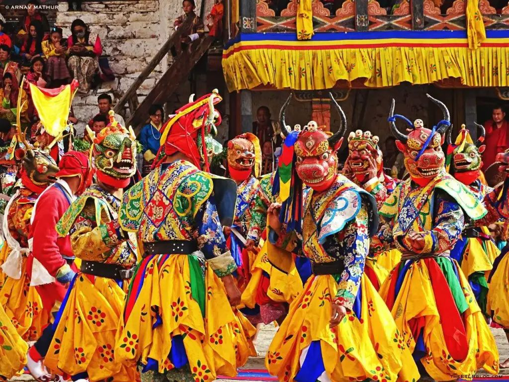
Tshechu festivals with mask dances and religious celebrations in dzongs.
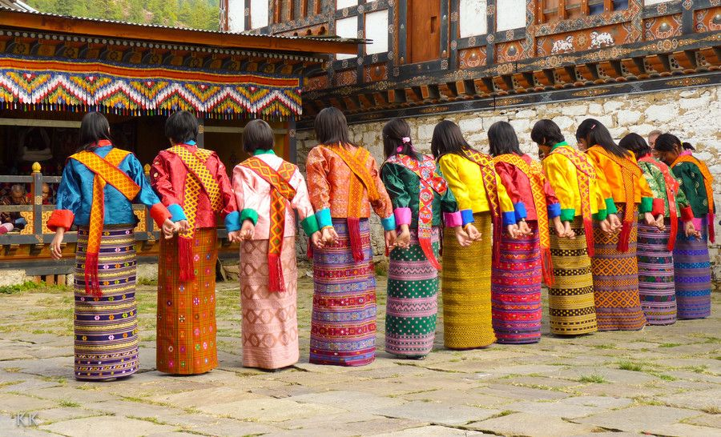
Mask dances and folk music using drums, cymbals, and horns.
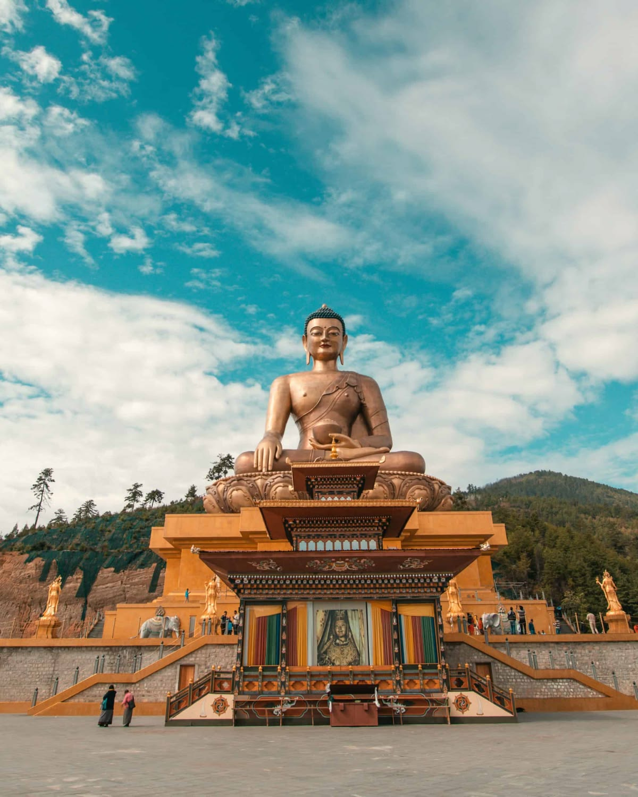
Buddhism is central, with prayer flags, wheels, and monasteries everywhere.
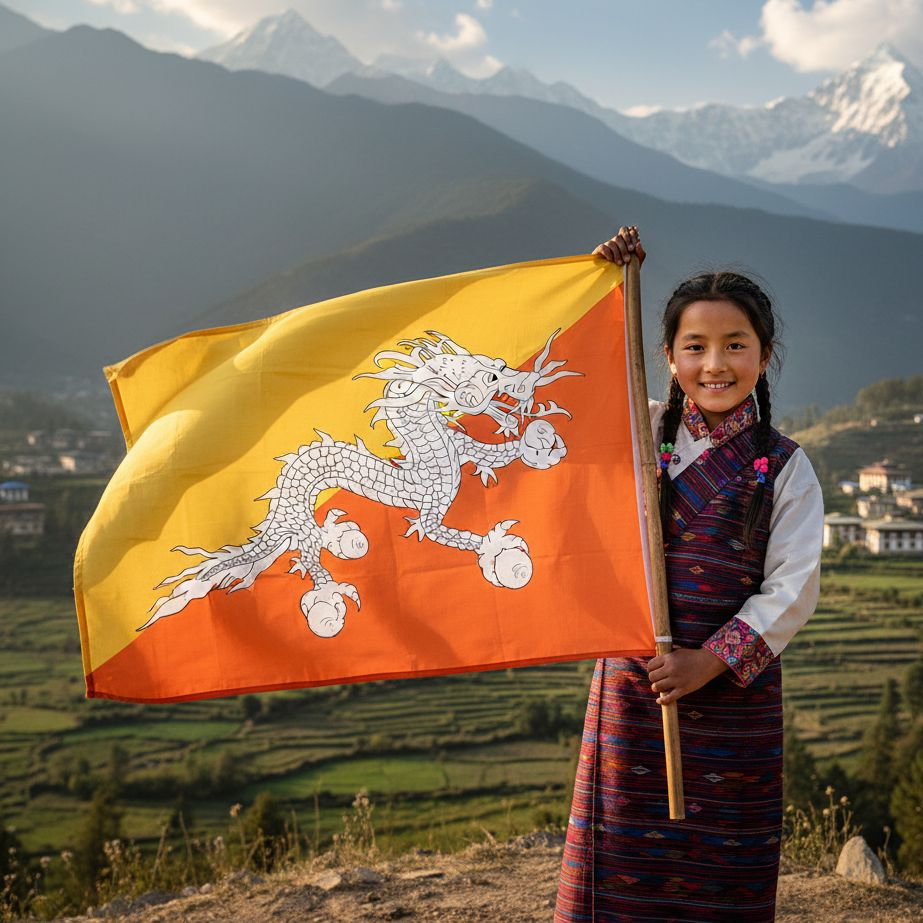
Respect, peace, and harmony with nature define Bhutanese life.
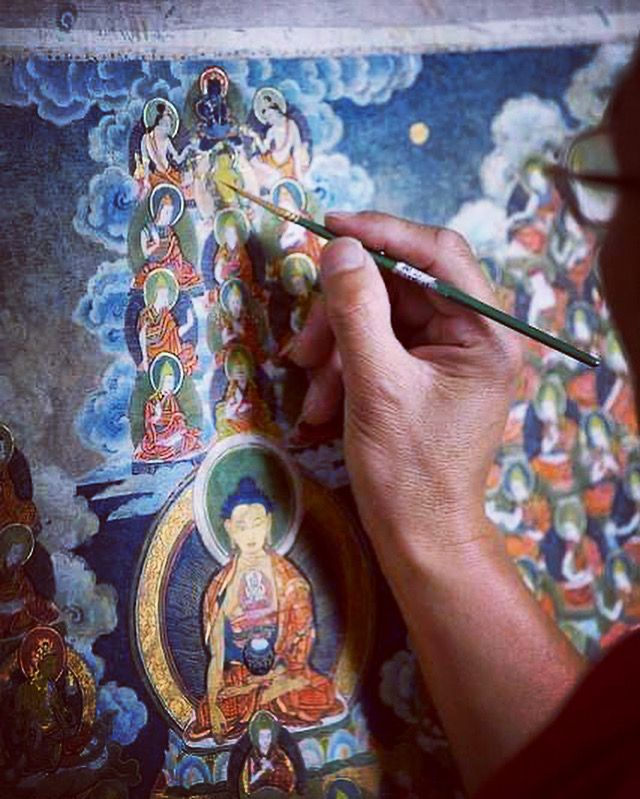
Weaving, wood carving, and thangka painting are traditional arts.
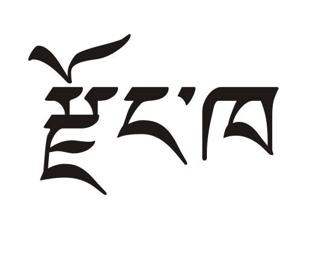
Dzongkha is the national language with many local dialects.
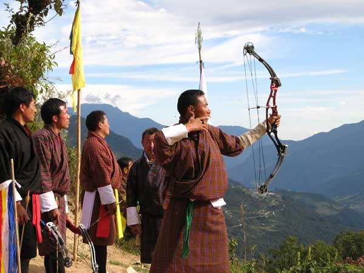
Archery is the national sport, played with music and celebration.
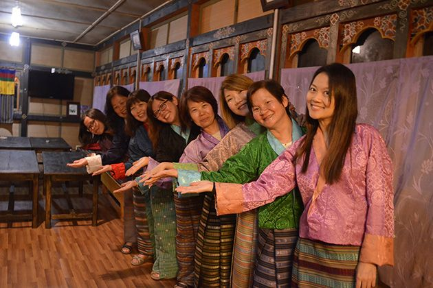
Respectful greetings and hospitality are important cultural values.
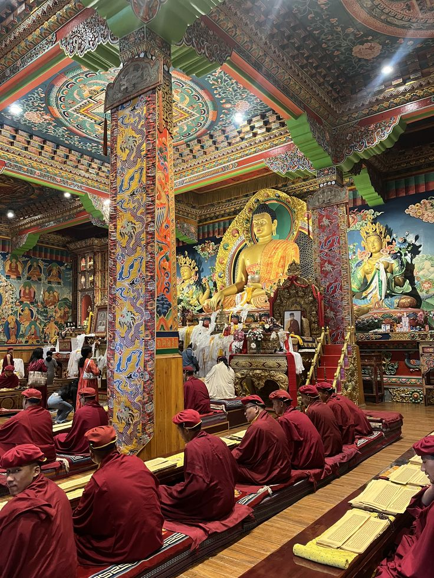
Monasteries preserve culture and monks play a key role in learning.
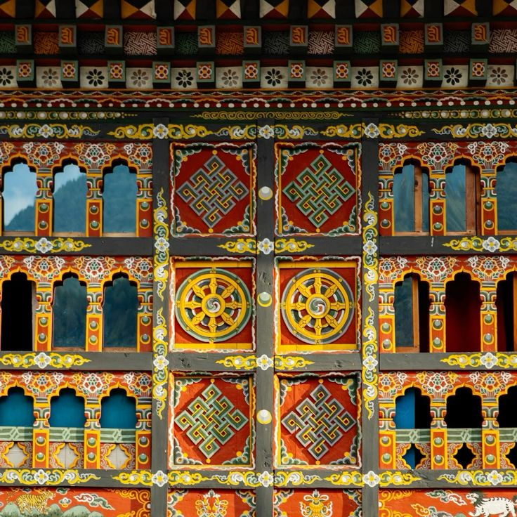
Bhutanese buildings are built without nails, featuring carved wood, painted windows, and fortress-style designs.
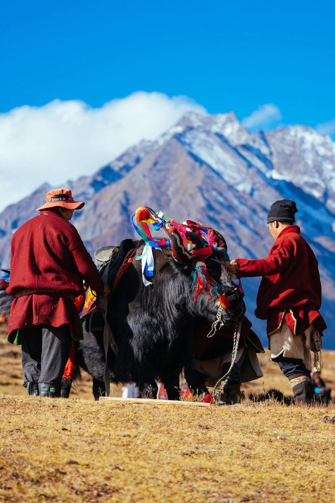
Bhutan is rich in biodiversity with mountains, forests, and rare animals like takin and snow leopards.
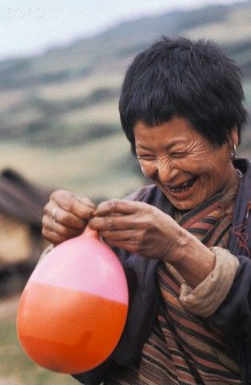
Bhutan focuses on happiness, well-being, and quality of life instead of only money.